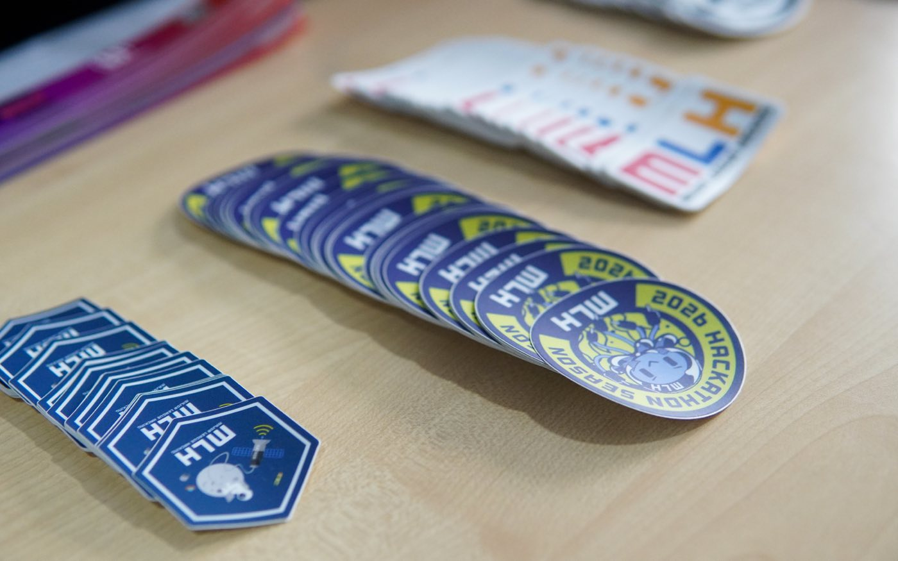

HackUnion Engineering Journal
Career & Growth
5 min read
Why Students Should Build Before They Graduate
Knowing something and being able to build with it are two different skills. Most students only discover the gap between them after graduation.


There’s a specific moment I’ve watched happen to a lot of students, and it usually goes the same way. Someone who’s done well in their courses, good grades, solid understanding of the material, sits down to build something on their own for the first time, and they freeze. Not because they don’t know the technology. Because knowing it and building with it turn out to be two different skills, and nobody told them that until this exact moment.
That gap is the whole argument of this article. Assignments teach you to apply a known method to a defined problem with a known right answer. Real projects don’t work like that. You don’t know what you don’t know until you’re stuck, and there’s no rubric telling you whether you’re close.
Tutorials Get You Started. They Don’t Get You Unstuck.
Tutorials are useful, and I’m not going to pretend otherwise. But a tutorial is someone else’s decisions, already made, handed to you in order. The learning that actually sticks happens after the tutorial ends, when your version breaks in a way the tutorial never covered, and you have to figure out why with no one walking you through it.
That’s the part most students skip, understandably. It’s uncomfortable. It’s also the only part that actually builds the skill of figuring things out, which is arguably the only skill that matters once you’re past the tutorials.
A Certificate Says You Attended. GitHub Says You Built.
I’ve seen a lot of resumes with a long list of certificates and almost nothing to actually look at. A certificate is proof you were present. A GitHub profile with real commits, even messy ones, is proof you did something. Those are not equivalent, and I think most students already sense that, even if they haven’t acted on it yet.
This isn’t about performing productivity. It’s that a commit history is one of the only honest records of whether someone has actually sat with a problem long enough to solve it.
You Don’t Need to Know Everything to Start
The idea that you should wait until you’re “ready” is, in my experience, mostly a way of postponing the discomfort of being bad at something in public. Nobody is ready. The people who look confident building things are usually just further along in being comfortable with not knowing, not further along in actually knowing more.
Building forces this in a useful way. You find out what you don’t know by hitting it, not by studying around it in advance. That’s the actual value of a hackathon, even a short one, not the prize, but the forced, compressed experience of discovering your gaps in real time and having to close them fast, often with people you just met.
Open source works similarly, just slower. Contributing to someone else’s project puts you in front of feedback that has nothing to do with grades, a maintainer telling you your approach doesn’t fit, a pull request getting rejected for reasons you didn’t anticipate. That’s uncomfortable the first time. It’s also one of the fastest ways to learn how real technical collaboration actually works, which a solo assignment can’t teach you.
The Part Nobody Prepares You For
Presenting unfinished work is its own skill, separate from the technical one. Most students have only ever presented finished, graded work. Presenting something rough, in front of people at a campus event or a community meetup who weren’t obligated to be kind about it, teaches you how to talk about what you built, what didn’t work, and what you’d do differently. That skill doesn’t show up in a syllabus, but it shows up constantly once you’re actually working.
This is also where meeting people outside your own college matters more than it sounds like it should. Your classmates have mostly seen the same material you have. Someone from a different campus, working on a different kind of problem, will ask a question your classmates wouldn’t think to ask, and that question is often where the real learning happens.
It Doesn’t Have to Be Big
None of this requires building the next big startup. A small project that solves one real, specific problem, even a boring one, is enough. So is a project that fails, as long as it teaches you something you couldn’t have learned by reading about it. So is a project that exists mainly because it got you working with two people you didn’t know before.
The scale of the project matters far less than whether it forced you to figure something out yourself, take feedback from someone who didn’t have to give it, and ship something that wasn’t perfect.
Education Still Matters
None of this is an argument against college. The theory, the fundamentals, the structured foundation, that part is real and it’s necessary. What I’ve seen, over and over, working with students through campus events and community programs, is that education becomes far more valuable once someone is also applying it. The classes make more sense in hindsight, once you’ve hit a real problem that needed them.
The mistake isn’t going to class. It’s treating graduation as the starting line for building, instead of realizing you already have everything you need to start now, badly, on something small.
You don’t need to be ready. You need to start.